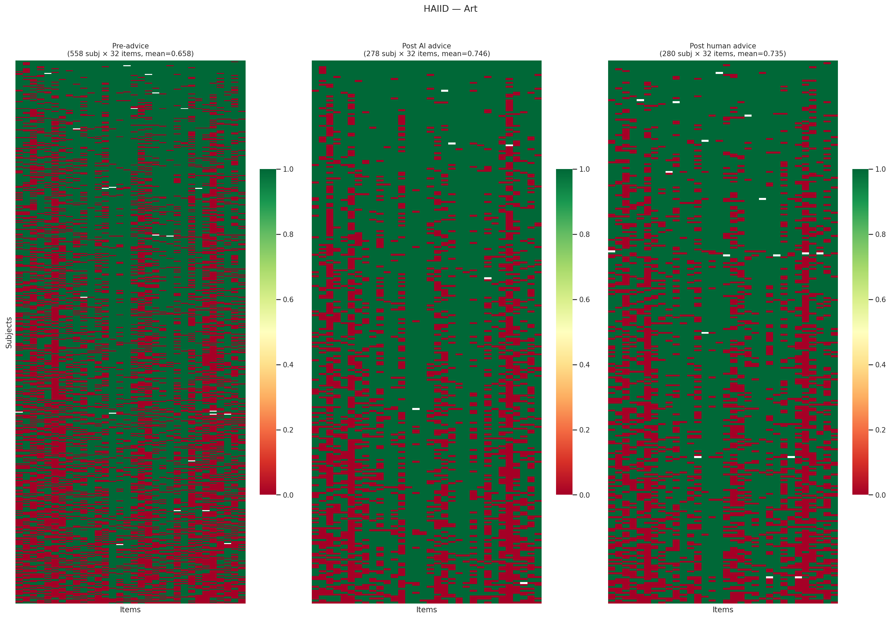
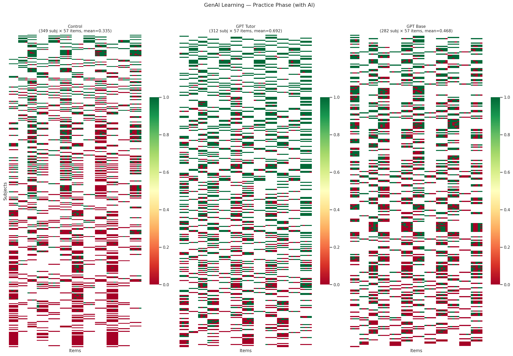
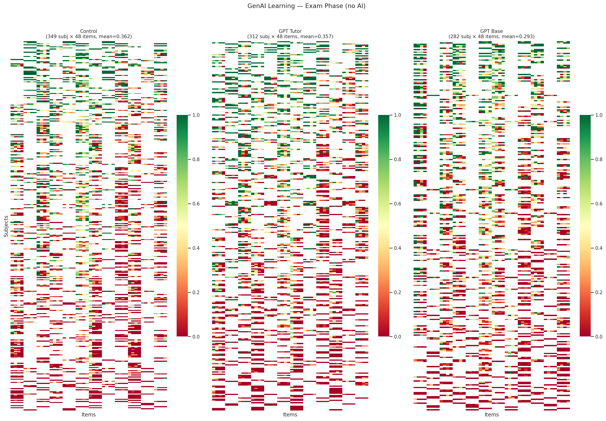
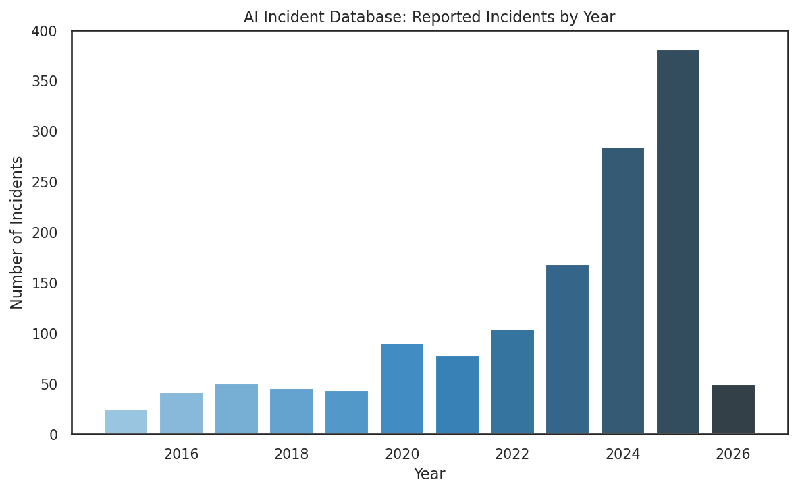
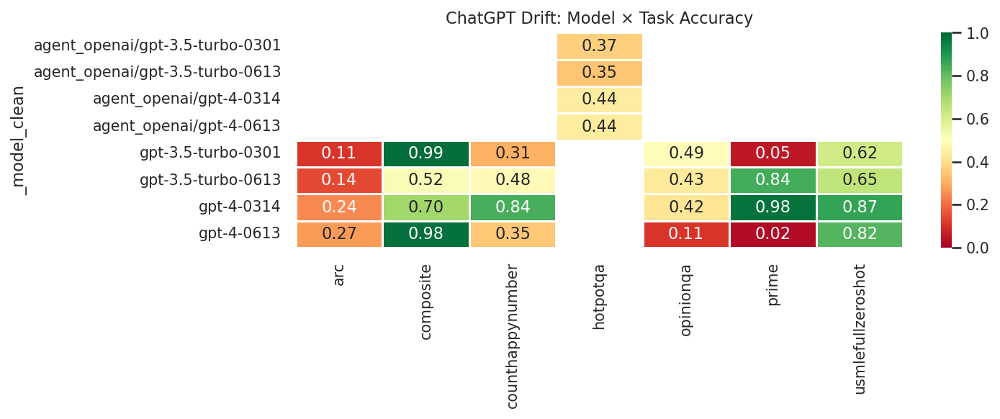

1 The Data Landscape
By the end of this chapter, you will be able to:
- Describe the response matrix \(Y_{ij}\) as the universal data structure underlying AI evaluation and identify what constitutes a “subject” and an “item” across different evaluation paradigms.
- Classify AI benchmarks along multiple axes: domain, response type, evaluation structure, and cultural scope.
- Articulate how design choices in benchmark construction — item selection, scoring rubrics, response format — shape the resulting response matrix and constrain downstream analysis.
- Identify practical data quality issues in AI evaluation: sparsity, missing data, inconsistent scoring, and benchmark contamination.
- Use the
torch_measuretoolkit to load, inspect, and visualize response matrices from real benchmarks.
This chapter can be covered in 1 lecture (75–90 minutes):
- The response matrix abstraction (15 min)
- A taxonomy of AI benchmarks (20 min)
- Multilingual, multicultural, and domain-specific evaluation (15 min)
- Preference data and pairwise comparisons (10 min)
- Data quality and practical issues (10 min)
- Hands-on: loading and exploring benchmarks with
torch_measure(15 min)
1.1 The Response Matrix
Every AI evaluation, no matter how complex, ultimately produces a table: rows are the systems being evaluated (models, agents, model–scaffold combinations), columns are the evaluation items (questions, tasks, prompts), and entries record how each system performed on each item. This is the response matrix.
A response matrix \(Y \in \mathbb{R}^{N \times M}\) records the performance of \(N\) subjects (models) on \(M\) items (tasks). The entry \(Y_{ij}\) can be:
- Binary: \(Y_{ij} \in \{0, 1\}\) (correct/incorrect, pass/fail, resolved/unresolved)
- Continuous: \(Y_{ij} \in [0, 1]\) (pass@1 rate, partial credit score, token probability)
- Missing: \(Y_{ij} = \texttt{NaN}\) (model not evaluated on this item)
The response matrix is the fundamental data structure for measurement science. All of the models in this book — IRT, factor models, Bradley-Terry — operate on response matrices or transformations thereof.
The simplicity of this abstraction is deceptive. The same \(N \times M\) matrix structure accommodates radically different evaluation paradigms:
| Evaluation Type | Rows (Subjects) | Columns (Items) | Values | Example |
|---|---|---|---|---|
| Knowledge QA | LLMs | Multiple-choice questions | Binary | MMLU-Pro (48 × 12,257) (Y. Wang et al. 2024) |
| Code generation | LLMs | Programming problems | Binary or pass@1 | BigCodeBench (153 × 1,140) (Zhuo et al. 2025) |
| Agent tasks | Agent + scaffold | Multi-step episodes | Binary | SWE-bench (134 × 500) (Jimenez et al. 2023) |
| Function calling | LLMs | API call specifications | Binary | BFCL (93 × 4,751) (Patil et al. 2025) |
| Web navigation | Agent + scaffold | Web interaction tasks | Binary | WebArena (14 × 812) (Zhou et al. 2024) |
| Terminal tasks | Agent + scaffold | System admin tasks | Continuous | Terminal-Bench (128 × 89) (Merrill et al. 2026) |
| Code reasoning | LLMs | Input/output prediction | Continuous | CRUXEval (38 × 800) (Gu et al. 2024) |
The key design decision is what counts as a “subject.” For knowledge benchmarks, a subject is typically a single LLM. For agentic benchmarks, a subject is a model–scaffold combination (e.g., SWE-Agent + Claude Sonnet 4), because the scaffold’s search strategy, tool use, and error recovery contribute substantially to performance. This distinction matters for measurement: if the scaffold contributes variance, a model’s “ability” as estimated by IRT partially reflects the scaffold, not the model alone.
1.1.1 Shape and Sparsity
Response matrices in AI evaluation are often surprisingly sparse or oddly shaped. A benchmark with 500 items evaluated on 134 model–scaffold combinations (SWE-bench Verified (Jimenez et al. 2023)) produces a dense matrix. But a benchmark ecosystem where models are evaluated on different subsets of items — because benchmarks evolve over time, or because compute constraints limit which models run on which items — produces a matrix with systematic missing data.
LiveCodeBench (Jain et al. 2024) illustrates this: its 72 models × 1,055 problems matrix is only 88.8% filled, because older models were evaluated on earlier problem sets (713 or 880 problems) while newer models have the full 1,055. This is not missing-at-random — it is missing-by-design, and the missingness pattern carries information (newer models tend to be more capable).
Understanding the shape and sparsity of the response matrix is a prerequisite for choosing the right model. Dense, rectangular matrices support standard IRT and factor models. Sparse or systematically incomplete matrices require models that handle missing data explicitly, or imputation strategies that account for the missingness mechanism.
1.2 A Taxonomy of AI Benchmarks
The AI evaluation landscape has grown rapidly. To make sense of it, we organize benchmarks along four axes: domain, response type, evaluation structure, and cultural scope.
1.2.1 By Domain
Benchmarks cluster into broad capability domains, each with distinct item characteristics and validity considerations.
Knowledge and reasoning. Benchmarks like MMLU-Pro (12,257 items across 14 domains) (Y. Wang et al. 2024), LiveBench (White et al. 2025), and HLE (Phan et al. 2026) test factual knowledge and reasoning through multiple-choice or short-answer questions. Items are typically self-contained, automatically scored, and drawn from existing exams or expert-written question banks. The primary validity concern is construct underrepresentation: a “reasoning” benchmark that tests only factual recall does not measure reasoning.
Code generation and software engineering. This is the largest and most diverse category, spanning basic function completion (EvalPlus: HumanEval+ and MBPP+ (Jiawei Liu et al. 2023)), competitive programming (LiveCodeBench: 1,055 problems from AtCoder, LeetCode, and CodeForces (Jain et al. 2024)), library-aware code generation (BigCodeBench: 1,140 tasks using 139 APIs (Zhuo et al. 2025)), code reasoning (CRUXEval: 800 input/output prediction problems (Gu et al. 2024)), code editing (EditBench: 540 editing tasks (Chi et al. 2026)), and full software engineering (SWE-bench: resolving real GitHub issues (Jimenez et al. 2023)). The progression from function completion to issue resolution represents increasing ecological validity — and increasing difficulty of automated scoring.
Agentic tasks. A rapidly growing category where the “subject” is not a bare model but a model–scaffold combination operating in an interactive environment. Examples include web navigation (WebArena: 812 tasks across e-commerce, forums, and CMS sites (Zhou et al. 2024)), mobile device automation (AndroidWorld: 116 tasks (Rawles et al. 2025)), desktop interaction (OSWorld (T. Xie et al. 2024)), multi-app coordination (AppWorld: 24 tasks (Trivedi et al. 2024)), and terminal operations (Terminal-Bench: 89 system administration tasks (Merrill et al. 2026)). Agentic benchmarks pose unique measurement challenges: the “item” is a multi-step episode, performance depends on the scaffold as much as the model, and scoring may require environment rollback and verification.
Tool use and function calling. BFCL (4,751 items across 22 categories) (Patil et al. 2025) and ToolBench (Xu et al. 2023) test whether models can correctly invoke APIs, parse schemas, and handle multi-turn tool interactions. These benchmarks sit between pure language tasks and agentic tasks — they test a specific capability (structured output generation) rather than end-to-end task completion.
Safety, security, and red teaming. This category spans cybersecurity challenges (CyBench: 40 CTF tasks (A. K. Zhang et al. 2025)), security of tool-using agents (AgentDojo: 949 security items (Debenedetti et al. 2024)), and red teaming — adversarial evaluation of whether models can be induced to produce harmful outputs. Red teaming data has a natural response matrix structure: rows are models, columns are attack prompts, and values are binary (safe/unsafe). HarmBench (400 prompts across 7 harm categories) (Mazeika et al. 2024) provides a standardized red teaming benchmark; BeaverTails (334K prompts with fine-grained safety annotations) (Ji et al. 2023) and DecodingTrust (243K prompts across 8 trustworthiness dimensions) (B. Wang et al. 2024) offer larger-scale evaluation. SafetyBench (11,435 MCQs across 7 safety categories) (Zhang et al. 2024) tests safety knowledge in a traditional MCQ format, while WMDP (3,668 MCQs on biosecurity, cybersecurity, and chemical security) (N. Li et al. 2024) evaluates hazardous knowledge as a proxy for CBRN risk. These benchmarks are distinctive because the “correct” response is often a refusal, and the construct (safety) is inherently adversarial — a model that scores perfectly on a safety benchmark today may fail tomorrow against novel attacks.
Preference and reward modeling. Benchmarks like RewardBench (Lambert et al. 2024), AlpacaEval (805 instructions) (X. Li et al. 2023), MT-Bench (Zheng et al. 2023), Arena Hard (Tianle Li* 2024), WildBench (Lin et al. 2024), and the Chatbot Arena (140K+ comparisons) (Chiang et al. 2024) evaluate model quality through human or automated preference judgments. The response matrix structure differs: instead of \(Y_{ij} \in \{0,1\}\), entries may represent win rates, Elo ratings, or pairwise comparison outcomes. We discuss this structure separately in Section 1.4.
1.2.2 By Response Type
The granularity of the response determines which measurement models are appropriate.
Binary responses (\(Y_{ij} \in \{0,1\}\)) are the simplest and most common. Standard IRT models (Rasch, 2PL, 3PL) are designed for binary data. Most code generation and knowledge benchmarks use binary scoring: the answer is correct or it is not.
Continuous responses (\(Y_{ij} \in [0,1]\)) arise from partial credit scoring, pass@\(k\) estimation (where \(Y_{ij}\) is the empirical pass rate over \(k\) samples), or rubric-based evaluation. Terminal-Bench scores tasks on a 0–100 scale (Merrill et al. 2026); CRUXEval reports pass@1 from 10 samples (Gu et al. 2024). Continuous responses carry richer information than binary responses and motivate extensions like Beta-IRT (Chapter 3).
Ordinal responses (\(Y_{ij} \in \{1, 2, \ldots, L\}\)) arise from Likert-scale rubrics (e.g., 1–5 quality ratings). The graded response model and partial credit model extend IRT to ordinal data, but these are less common in current AI evaluation.
Preference data (\(Y_{ij} \in \{A, B, \text{tie}\}\)) from pairwise comparisons have a fundamentally different structure, discussed in Section 1.4.
1.2.3 By Evaluation Structure
Static benchmarks have a fixed item set evaluated once per model. Most existing benchmarks are static. The advantage is reproducibility; the disadvantage is vulnerability to contamination and saturation.
Dynamic benchmarks add new items over time (LiveBench (White et al. 2025), LiveCodeBench (Jain et al. 2024)) or generate items adversarially (DynaBench (Kiela et al. 2021)). LiveCodeBench draws from ongoing programming competitions, ensuring that items postdate model training cutoffs (Jain et al. 2024). The measurement challenge is maintaining scale comparability: if the item pool changes, ability estimates from different time periods are not directly comparable without equating procedures.
Interactive benchmarks require multi-turn interaction between the model and an environment or human evaluator. Chatbot Arena (Chiang et al. 2024), WebArena (Zhou et al. 2024), and Terminal-Bench (Merrill et al. 2026) are interactive. The “item” is not a static question but a dynamic episode whose difficulty depends on the model’s earlier actions. Standard IRT assumes item parameters are fixed and independent of the subject — an assumption that interactive benchmarks may violate.
1.2.4 Complete Benchmark Inventory
The following tables enumerate all 84 benchmarks curated in the torch_measure collection, organized by domain and sorted by release date. Together they span over 4.5 million unique evaluation items and over 6,700 model/agent entries, with 69 benchmarks providing full per-item response matrices.
Knowledge and Reasoning
| # | Benchmark | \(N \times M\) | Type | Evaluation Method | Released | Reference |
|---|---|---|---|---|---|---|
| 1 | ARC-AGI v1 | 52 × 400 | Bin | Grid output match; visual abstract reasoning | 2019-11 | arXiv:1911.01547 |
| 2 | MMLU-Pro | 48 × 12,257 | Bin | MCQ; exact match on 10-choice questions | 2024-06 | arXiv:2406.01574 |
| 3 | LiveBench | 195 × 494 | Con | Rubric-scored; monthly-refreshed, automated grading | 2024-06 | arXiv:2406.19314 |
| 4 | ARC-AGI v2 | 28 × 120 | Bin | Grid output match; harder visual reasoning | 2024-12 | arcprize |
| 5 | HLE | 19 × 1,792 | Bin | MCQ + open-ended; expert-authored, LLM-graded | 2025-01 | arXiv:2501.14249 |
| 6 | MathArena | 68 × 336 | Con | Exact match; competition problems (AIME, AMC) | 2025-03 | matharena.ai |
Code Generation and Software Engineering
| # | Benchmark | \(N \times M\) | Type | Evaluation Method | Released | Reference |
|---|---|---|---|---|---|---|
| 7 | EvalPlus | 31 × 542 | Bin | Unit tests; augmented test suites | 2023-05 | arXiv:2305.01210 |
| 8 | SWE-bench Verified | 134 × 500 | Bin | Repo test suite; GitHub issue resolution | 2023-10 | arXiv:2310.06770 |
| 9 | SWE-bench Full | 24 × 2,294 | Bin | Repo test suite; full instance set | 2023-10 | arXiv:2310.06770 |
| 10 | CRUXEval | 38 × 800 | Con | Exact match; I/O prediction | 2024-01 | arXiv:2401.03065 |
| 11 | LiveCodeBench | 72 × 1,055 | Con | Unit tests; pass@1, contest problems | 2024-03 | arXiv:2403.07974 |
| 12 | BigCodeBench | 153 × 1,140 | Bin | Unit tests; sandbox, 139 library APIs | 2024-06 | arXiv:2406.15877 |
| 13 | SWE-bench Java | 52 × 170 | Bin | Repo test suite; Java issues | 2024-08 | multi-swe-bench |
| 14 | SWE-bench Multi | 13 × 301 | Bin | Repo test suite; multi-language | 2024-08 | multi-swe-bench |
| 15 | MLE-bench | 30 × 75 | Con | Kaggle scoring; competition submission | 2024-10 | arXiv:2410.07095 |
| 16 | DPAI Arena | 9 × 141 | Con | Test suite + rubric; dual evaluation | 2025-01 | dpaia.dev |
| 17 | ClineBench | 3 × 12 | Con | Harbor framework; coding agent | 2025-01 | cline/cline |
| 18 | SWE-PolyBench | — × 2,110 | Bin | Repo test suite; polyglot SWE | 2025-01 | arXiv:2501.14798 |
| 19 | EditBench | 44 × 540 | Con | Unit tests; code editing, multilingual | 2025-02 | waynchi/editbench |
Tool Use and Function Calling
| # | Benchmark | \(N \times M\) | Type | Evaluation Method | Released | Reference |
|---|---|---|---|---|---|---|
| 20 | BFCL v3 | 93 × 4,751 | Bin | AST match + exec; function call validation | 2024-02 | arXiv:2402.15671 |
| 21 | ToolBench | 10 × 765 | Bin | StableToolBench; cached API eval | 2024-03 | arXiv:2403.07714 |
Agentic Tasks
| # | Benchmark | \(N \times M\) | Type | Evaluation Method | Released | Reference |
|---|---|---|---|---|---|---|
| 22 | WebArena | 14 × 812 | Bin | Browser env; live websites | 2023-07 | arXiv:2307.13854 |
| 23 | AgentBench | 29 × 8 | Con | Multi-env; OS, DB, web, game | 2023-08 | arXiv:2308.03688 |
| 24 | GAIA | 32 × 165 | Bin | Exact match; web + tool-use | 2023-11 | arXiv:2311.12983 |
| 25 | VisualWebArena | 6 × 910 | Con | Browser env; multimodal web | 2024-01 | arXiv:2401.13649 |
| 26 | WorkArena | 4 × 118 | Con | ServiceNow env; enterprise | 2024-03 | arXiv:2403.07718 |
| 27 | OSWorld | 77 × 369 | Con | VM env; desktop automation | 2024-04 | arXiv:2404.07972 |
| 28 | AndroidWorld | 3 × 116 | Bin | Emulator; mobile automation | 2024-05 | arXiv:2405.14573 |
| 29 | AgentDojo | 29 × 132 | Bin | Sandbox; tool-use + security | 2024-06 | arXiv:2406.13352 |
| 30 | AgentDojo (Sec.) | 28 × 949 | Bin | Sandbox; attack success | 2024-06 | arXiv:2406.13352 |
| 31 | TAU-bench | 32 × 329 | Con | Simulated env; customer service | 2024-06 | arXiv:2406.12045 |
| 32 | AppWorld | 18 × 31 | Con | API env; multi-app interaction | 2024-07 | arXiv:2407.18901 |
| 33 | CORE-Bench | 15 × 270 | Bin | Docker env; reproducibility | 2024-09 | arXiv:2409.11353 |
| 34 | BrowserGym | 18 × 8 | Con | Browser env; aggregate scores | 2024-12 | arXiv:2412.05467 |
| 35 | TheAgentCompany | 19 × 175 | Con | Simulated enterprise; workplace | 2024-12 | arXiv:2412.14161 |
| 36 | Terminal-Bench | 128 × 89 | Con | Docker env; CLI task resolution | 2025-02 | arXiv:2502.10996 |
| 37 | PaperBench | 9 × 20 | Con | Rubric; reproduce ML papers | 2025-02 | arXiv:2504.01848 |
Safety, Security, and Red Teaming
| # | Benchmark | \(N \times M\) | Type | Evaluation Method | Released | Reference |
|---|---|---|---|---|---|---|
| 38 | CyBench | 8 × 40 | Bin | CTF env; flag capture | 2024-08 | arXiv:2408.08926 |
| 39 | BBQ | 7 × 58,492 | Bin | MCQ; bias across 11 demographic categories | 2022-05 | nyu-mll/BBQ |
| 40 | JailbreakBench | 18 × 100 | Bin | Red teaming; 5 attack methods × 4 models | 2024-01 | JailbreakBench |
| 41 | BeaverTails | 15 × 33,432 | Bin | Safety annotations; 14 harm categories | 2023-07 | PKU-Alignment/beavertails |
| 42 | HarmBench | — × 510 | — | Classifier judge; 7 harm categories (items only) | 2024-02 | arXiv:2402.04249 |
| 43 | WMDP | — × 3,668 | — | MCQ; biosecurity, cybersecurity, chemical (items only) | 2024-03 | wmdp.ai |
| 44 | SafetyBench | — × 11,435 | — | MCQ; 7 safety categories (items only, answers withheld) | 2024-06 | thu-coai/SafetyBench |
| 45 | DecodingTrust | — × 243K | — | 8 trustworthiness axes (prompts only) | 2023-06 | NeurIPS 2023 |
| 46 | TensorTrust | — × 563K | Bin | Prompt injection attacks + defenses (game) | 2024-02 | qxcv/tensor-trust |
| 47 | LLMail-Inject | 839 × 40 | Bin | Prompt injection; 40 levels, multiple LLMs | 2025-06 | microsoft/llmail-inject |
| 48 | Alignment Faking | — × 2.14M | Bin | RL transcripts; alignment faking labels | 2024-12 | Anthropic/alignment-faking-rl |
| 49 | AgentHarm | — × 176 | Bin | Multi-step harmful agent tasks; 11 categories | 2024-10 | ai-safety-institute/AgentHarm |
| 50 | MACHIAVELLI | — × 572K scenes | Con | Ethical decision-making; 25+ violation types | 2023-04 | aypan17/machiavelli |
| 51 | BELLS | — × 5 datasets | Bin | Labeled execution traces; jailbreak, hallucination | 2024-06 | CeSIA/BELLS |
| 52 | Scale MRT | — × 6K traces | Bin | Agent monitor evasion; lying, manipulation | 2025 | ScaleAI/mrt |
Domain-Specific (Legal, Finance, Medical)
| # | Benchmark | \(N \times M\) | Type | Evaluation Method | Released | Reference |
|---|---|---|---|---|---|---|
| 53 | MedNLI | — × 14,049 | Bin | NLI; clinical sentence pairs from MIMIC-III | 2018-08 | Romanov and Shivade (2018) |
| 54 | PubMedQA | — × 1,000 | Bin | MCQ; biomedical research yes/no/maybe | 2019-09 | Jin et al. (2019) |
| 55 | IgakuQA | 5 × 1,471 | Bin | MCQ; Japanese medical licensing exams (2018–2022) | 2023-03 | jungokasai/IgakuQA |
| 56 | LawBench | 51 × 9,000 | Bin | Exact match; 20 Chinese legal tasks, zero-shot | 2023-09 | open-compass/LawBench |
| 57 | FinanceBench | 16 × 150 | Bin | Expert-graded; SEC filing QA | 2023-11 | patronus-ai/financebench |
| 58 | LexEval | 38 × 14,147 | Con | Rubric; 23 Chinese legal tasks (NeurIPS 2024) | 2024-09 | CSHaitao/LexEval |
| 59 | AfriMedQA | 30 × 6,910 | Bin | MCQ; Pan-African medical, 20 specialties | 2024-09 | arXiv:2409.15290 |
Preference and Reward Modeling
| # | Benchmark | \(N \times M\) | Type | Evaluation Method | Released | Reference |
|---|---|---|---|---|---|---|
| 79 | AlpacaEval | 221 × 805 | Bin | LLM judge; win/loss vs GPT-4 | 2023-05 | tatsu-lab/alpaca_eval |
| 80 | MT-Bench | — × 80 | — | GPT-4 + human pairwise; multi-turn | 2023-06 | lm-sys/FastChat |
| 81 | UltraFeedback | 17 × 63,966 | Con | GPT-4 judge; overall score (1–10) | 2023-10 | OpenBMB/UltraFeedback |
| 82 | RewardBench | 149 × 2,985 | Bin | Score comparison; chosen vs rejected | 2024-03 | arXiv:2403.13787 |
| 83 | WildBench | 63 × 1,024 | Con | LLM judge; checklist scoring | 2024-06 | arXiv:2406.04770 |
Multilingual and Cultural Evaluation
| # | Benchmark | \(N \times M\) | Type | Evaluation Method | Released | Reference |
|---|---|---|---|---|---|---|
| 84 | MasakhaNER v2 | — × — | Bin | NER; 20 African languages | 2022-10 | arXiv:2210.12391 |
| 78 | HELM African | — × — | Con | HELM harness; African language tasks | 2022-11 | HELM |
| 79 | HELM CLEVA | — × — | Con | HELM harness; Chinese language eval | 2022-11 | HELM |
| 80 | HELM ThaiExam | — × — | Con | HELM harness; Thai examination tasks | 2022-11 | HELM |
| 81 | C-Eval | — × 12,342 | Bin | MCQ; Chinese educational system | 2023-05 | arXiv:2305.08322 |
| 82 | CMMLU | — × 11,582 | Bin | MCQ; Chinese 67 subjects | 2023-06 | arXiv:2306.09212 |
| 83 | Rakuda | 141 × 40 | Con | LLM judge; Japanese open-ended QA | 2023-06 | shisa-ai/shaberi |
| 84 | SIB-200 | 2 × 41,820 | Bin | Classification; 205 languages | 2023-09 | arXiv:2309.07445 |
| 78 | OALL Arabic MMLU | — × — | Bin | MCQ; native Arabic knowledge questions | 2024-02 | OALL |
| 79 | OALL Arabic Exams | — × — | Bin | MCQ; Arabic exam questions | 2024-02 | OALL |
| 80 | KMMLU | — × 35,030 | Bin | MCQ; Korean exams | 2024-02 | arXiv:2402.11548 |
| 81 | Tengu-Bench | 141 × 120 | Con | LLM judge; Japanese multi-category | 2024-04 | shisa-ai/shaberi |
| 82 | AfriEval | — × 469,210 | Bin | MCQ + NLI + QA; African languages | 2024 | HuggingFace |
| 83 | AsiaEval | — × 398,263 | Bin | MCQ + NLI; Asian languages | 2024 | HuggingFace |
| 84 | CulturalEval | — × 82,996 | Bin | MCQ; cross-cultural values | 2024 | HuggingFace |
| 78 | IberBench | — × 32,797 | Bin | MCQ + NLI; Iberian languages | 2024 | HuggingFace |
| 79 | Bridging Gap | 1,767 × 36 | Bin | MCQ; Winogrande × 12 languages | 2024 | HuggingFace |
| 80 | Ko Leaderboard | 1,159 × 9 | Con | lm-eval-harness; Korean tasks | 2024 | Open Ko-LLM |
| 81 | La Leaderboard | 69 × 108 | Con | lm-eval-harness; Iberian tasks | 2024 | HuggingFace |
| 82 | PT Leaderboard | 1,148 × 10 | Con | lm-eval-harness; Portuguese | 2024 | HuggingFace |
| 83 | Thai Leaderboard | 72 × 19 | Con | lm-eval-harness; Thai tasks | 2024 | HuggingFace |
| 84 | TUMLU | 30 × 7,486 | Bin | MCQ; 9 Turkic languages, CoT + non-CoT | 2024-12 | ceferisbarov/TUMLU |
Legend. \(N\) = models/agents; \(M\) = items/tasks; “—” = item-only data. Type: Bin = binary; Con = continuous \([0,1]\). Released: earliest public availability (arXiv, GitHub, or HuggingFace). Evaluation Method: MCQ = multiple-choice exact match; unit tests = code execution; LLM judge = automated preference judgment; env = interactive environment.
Scoring variants. The 84 entries above correspond to 120 dataset variants on HuggingFace (aims-foundation/torch-measure-data). Many benchmarks are released with multiple scoring conditions that produce different response matrices from the same items — a measurement choice that affects downstream analysis. For example:
| Benchmark | Variants | Scoring conditions |
|---|---|---|
| CRUXEval | 6 | Continuous / binary × combined / input-only / output-only |
| TAU-bench | 6 | Combined + 5 domain splits (airline v1/v2, HAL, retail, telecom) |
| EvalPlus | 5 | Combined + HumanEval / MBPP × base / augmented test suites |
| BigCodeBench | 4 | Complete / instruct × full / hard subset |
| DPAI Arena | 4 | Total / blind / informed scoring + binary threshold |
| MLE-bench | 4 | Continuous / binary / above-median / raw Kaggle scores |
| CyBench | 3 | Unguided / subtask-guided / subtask completion scores |
| SWE-PolyBench | 2 | Full (1 model) / verified (3 models) |
| 13 others | 2 each | Binary vs. continuous rescoring of same items |
These variants represent different testing conditions in the sense of Chapter 5: the same items administered under different scoring rubrics, prompt formats, or subset selections. A model’s measured ability can change substantially across conditions — BigCodeBench “instruct” scores differ from “complete” scores for the same model on the same items, because the prompt format changes what capability is being measured. This is why Generalizability Theory (Chapter 5) decomposes variance across conditions: the scoring condition is a facet of measurement, not just a data processing choice.
1.2.5 Visualizing the Landscape
To see the structure of the evaluation landscape at a glance, we embed the item text from 19 benchmarks using a sentence transformer, then project benchmark centroids to 2D with UMAP. Each point represents one benchmark, positioned by the semantic content of its items.
The scatter plot reveals several structural features of the evaluation landscape. Knowledge benchmarks form a broad cluster, with English-language benchmarks (MMLU-Pro (Y. Wang et al. 2024), HLE (Phan et al. 2026), LiveBench (White et al. 2025)) grouping together and multilingual benchmarks (C-Eval (Huang et al. 2023), CMMLU (H. Li et al. 2023), KMMLU (Son et al. 2024), AfriEval, IberBench (González et al. 2025)) spreading along a language axis. Code benchmarks (BigCodeBench (Zhuo et al. 2025), EvalPlus (Jiawei Liu et al. 2023), CRUXEval (Gu et al. 2024)) occupy a distinct region, reflecting the semantic difference between natural language questions and programming tasks. Software engineering benchmarks (SWE-bench (Jimenez et al. 2023) and variants) cluster tightly because their items are GitHub issue descriptions, which share a distinctive technical register regardless of the programming language. The separation between clusters suggests that these benchmark categories measure genuinely different constructs — a hypothesis we can test formally using the factor models in Chapter 2.
1.3 Multilingual and Cultural Evaluation
A striking feature of the current evaluation landscape is the effort to extend measurement beyond English and Western cultural contexts. This creates both opportunities and challenges for measurement science.
1.3.1 Regional Leaderboards and Benchmarks
Multiple evaluation efforts target specific linguistic and cultural communities:
| Benchmark | Focus | Coverage |
|---|---|---|
| C-Eval (Huang et al. 2023), CMMLU (H. Li et al. 2023) | Chinese language and culture | Mandarin, Chinese educational system |
| KMMLU | Korean language and knowledge | Korean educational and professional domains |
| Thai Leaderboard | Thai language evaluation | Thai language tasks |
| IberBench | Iberian languages | Spanish, Portuguese, Catalan, and related languages |
| AfriEval | African languages | Multiple African languages and cultural contexts |
| AfriMedQA | African healthcare | Medical QA in African healthcare contexts |
| AsiaEval | Asian languages and culture | Cross-Asian evaluation |
| CulturalEval | Cultural knowledge | Cross-cultural knowledge and values |
| SIB-200 | Massively multilingual | 200+ languages, topic classification |
| HELM Multilingual | Multilingual model evaluation | Standardized multilingual evaluation |
These benchmarks reveal a fundamental validity question: does “reasoning ability” — or any other construct we measure — mean the same thing across languages and cultures? A model that excels at English-language reasoning may fail in Korean not because it lacks reasoning ability, but because the items embed cultural knowledge (Korean history, legal system, social norms) that is construct-irrelevant for a non-Korean audience but construct-relevant for Korean users.
In measurement theory terms, this is a differential item functioning (DIF) problem at the cultural level. Items that are “fair” in one cultural context may be systematically harder or easier in another, not because of ability differences but because of construct-irrelevant cultural loading. The DIF analysis tools developed in Chapter 6 are directly applicable.
1.3.2 Multilingual Software Engineering
The multilingual dimension extends beyond language tasks. SWE-bench Multilingual (Jimenez et al. 2023) and SWE-bench Java (Zan et al. 2024) test software engineering in languages other than Python, revealing that “coding ability” as measured by Python-only benchmarks may not transfer. SWE-PolyBench (Rashid et al. 2025) tests across multiple programming languages simultaneously. These benchmarks provide natural settings for studying the dimensionality of coding ability: is there a single “software engineering” construct, or are Python ability, Java ability, and JavaScript ability partially independent dimensions?
1.4 Preference Data and Pairwise Comparisons
A significant fraction of AI evaluation data comes not from item-level scoring but from pairwise comparisons: a human or automated judge compares two model outputs and declares a winner. The Chatbot Arena (140K+ comparisons) (Chiang et al. 2024), AlpacaEval (X. Li et al. 2023), MT-Bench (Zheng et al. 2023), Arena Hard (Tianle Li* 2024), WildBench (Lin et al. 2024), and preference datasets (HH-RLHF (Bai et al. 2022), UltraFeedback (Cui et al. 2024), HelpSteer2 (Z. Wang et al. 2024), Nectar (Zhu et al. 2023), SHP-2 (Askell et al. 2021)) all produce comparison data.
1.4.1 From Comparisons to Response Matrices
Pairwise comparison data has a different structure from standard response matrices. Instead of “model \(i\) on item \(j\),” we observe “model \(A\) preferred over model \(B\) on prompt \(k\).” The natural data structure is a comparison tensor \(C_{ABk} \in \{A, B, \text{tie}\}\).
The Bradley-Terry model , Section 2.2.3 connects this structure to the response matrix framework. Under Bradley-Terry, the probability that model \(A\) is preferred over model \(B\) is:
\[ P(A \succ B) = \frac{\exp(\theta_A)}{\exp(\theta_A) + \exp(\theta_B)} = \sigma(\theta_A - \theta_B) \]
This is formally equivalent to a Rasch model where the “subject” is the comparison pair \((A, B)\), the “item difficulty” is \(\theta_B\), and the “ability” is \(\theta_A\). The Elo rating system implements online maximum likelihood estimation for this model.
1.4.2 Reward Model Benchmarks
RewardBench (Lambert et al. 2024) and RewardBench 2 (Malik et al. 2025) evaluate reward models — the models that score outputs in RLHF pipelines. Here the “subject” is a reward model and the “item” is a (prompt, chosen response, rejected response) triplet. The response is binary: does the reward model assign a higher score to the chosen response? This is a standard response matrix, but the items have rich internal structure (two full-text responses per item) that simple IRT models do not capture.
Preference Dissection (J. Li et al. 2024) and BigGen (Kim et al. 2025) go further, decomposing preference judgments into multiple criteria (helpfulness, safety, coherence, creativity), producing multi-trait response data suitable for multidimensional measurement models.
1.5 Paired Response Matrices
The response matrices above have one matrix per benchmark. But a growing body of AI evaluation produces paired matrices: the same (or comparable) subjects respond to items under multiple conditions — typically with and without AI assistance. Deployment RCTs, uplift studies, and human-AI collaboration experiments all produce this structure.
1.5.1 The Paired Response Matrix
These studies share a common data structure that extends the response matrix with a treatment dimension. Where the standard response matrix records:
\[ Y_{ij} \in \{0, 1\} \quad \text{(subject } i \text{ on item } j\text{)} \]
the paired response matrix records:
\[ Y_{ij}^{(t)} \in \{0, 1\} \quad \text{(subject } i \text{ on item } j \text{ under condition } t\text{)} \]
where \(t \in \{\text{control}, \text{treatment}\}\) (or multiple treatment arms). The subjects are now humans — radiologists, developers, students — and the measurement target is the causal effect of AI on human performance, not the AI system’s capability in isolation.
This structure connects naturally to many-facet measurement models. In the many-facet Rasch framework, the treatment condition is simply another facet alongside person ability and item difficulty:
\[ \log \frac{P(Y_{ij}^{(t)} = 1)}{P(Y_{ij}^{(t)} = 0)} = \theta_i - \beta_j + \tau_t \]
where \(\tau_t\) is the treatment effect facet. The interaction \(\theta_i \times \tau_t\) captures heterogeneous treatment effects — the degree to which AI assistance helps some people more than others.
1.5.2 An Inventory of Paired Response Matrices
We curate five publicly available intervention datasets spanning medicine, software engineering, classification, and education. These are the first datasets in the torch_measure collection where the subjects are humans rather than AI systems.
| Dataset | Domain | Subjects | Items | AI System | Conditions | Outcome | Source |
|---|---|---|---|---|---|---|---|
| Collab-CXR | Radiology | 336 radiologists | 324 CXR cases | CheXpert (DenseNet121) | 4 (image only, +history, +AI, +AI+history) | Diagnostic probability | OSF |
| METR Early-2025 | Coding | 16 developers | 246 issues | Cursor Pro + Claude 3.5/3.7 Sonnet | {AI allowed, AI disallowed} | Completion time (min) | GitHub |
| METR Late-2025 | Coding | 57 developers | 1,134 issues | Cursor Pro + Claude 3.5/3.7 Sonnet | {AI allowed, AI disallowed} | Completion time (min) | GitHub |
| HAIID | Classification | 1,125 participants | 152 items (5 domains) | Trained classifiers (per-domain) | Pre/post advice x {AI, human label} | Binary correct | GitHub |
| GenAI Learning | Education (math) | 943 students | 57 practice + 48 exam | GPT-4 (vanilla + guardrailed tutor) | {control, vanilla GPT, augmented GPT} | Binary score | GitHub |
Collab-CXR (F. Yu et al. 2024) is the largest and cleanest dataset. 227 radiologists each read a subset of 324 chest X-ray cases under four conditions (with/without AI predictions, with/without clinical history), providing probabilistic assessments for 104 pathologies per case. The AI system is CheXpert, a DenseNet121 CNN trained on 224,316 chest radiographs that outputs per-pathology probability predictions; it outperforms roughly two-thirds of participating radiologists on AUROC. The within-subject, crossed design makes it ideal for many-facet analysis. AI assistance improves mean diagnostic accuracy from 96.5% to 97.1%, but the effect is heterogeneous across radiologists and pathologies.
METR Developer Productivity (Becker et al. 2025) is a within-subject RCT where each developer’s issues are randomly assigned to AI-allowed or AI-disallowed conditions. The AI tool is Cursor Pro with Claude 3.5/3.7 Sonnet — a state-of-the-art AI coding assistant at the time of the study. The early study (16 developers, 246 tasks) found that AI-allowed tasks took longer (119.5 vs. 90.9 minutes) — a counterintuitive result driven by context-switching costs and AI-induced scope expansion. The late study (57 developers, 1,134 tasks) found a smaller and reversed effect (151 vs. 169 minutes), though with severe selection effects. A key limitation for IRT analysis: items are developer-specific (not shared across subjects), producing a block-diagonal matrix.
HAIID (Vodrahalli et al. 2022) measures whether labeling advice as “from AI” versus “from a human” changes how people use it. The AI systems are trained classifiers for each domain (art style, city population, sarcasm detection, census income, dermatology). Across five classification domains, the label has minimal effect: AI-labeled advice improves accuracy by +5–9%, and human-labeled advice improves accuracy by nearly the same amount. The advice content, not its provenance, drives the effect.

GenAI Learning (Bastani et al. 2025) demonstrates a measurement paradox. The AI system is GPT-4 in two configurations: a vanilla ChatGPT interface and a pedagogically designed tutor with guardrails that encourages step-by-step reasoning rather than giving answers directly. Students practicing math with ChatGPT score dramatically higher during practice (0.69 vs. 0.34 for controls), but score no better on a subsequent exam without AI (0.36 vs. 0.36). Students using the guardrailed GPT tutor also fail to outperform controls on the exam (0.35). AI inflates apparent performance without producing durable learning — a finding with implications for any evaluation that measures human-AI teams without separating the human’s contribution.


1.5.3 What Paired Response Matrices Enable
Intervention matrices open measurement questions that standard benchmarks cannot address:
Heterogeneous treatment effects. Does AI help all users equally, or does it preferentially help experts, novices, or specific subgroups? Many-facet Rasch models and DIF analysis (Section 6.4.4) can decompose the treatment effect by person characteristics.
Measurement validity of human-AI teams. If a human-AI team scores 90% on a task, how much is the human contributing? The GenAI Learning result shows this is not a trivial decomposition — apparent team performance can be entirely attributable to the AI, with the human learning nothing.
Linking pre-deployment to post-deployment. Safety benchmarks measure AI capabilities in isolation; paired response matrices measure what happens when humans interact with those capabilities. The relationship between the two is the empirical question of ecological validity — and it is almost entirely unstudied.
Psychometric linking across safety frameworks. Different AI labs use incompatible safety evaluation frameworks (Anthropic’s ASL levels, OpenAI’s Preparedness thresholds, DeepMind’s Critical Capability Levels). IRT linking methodology could place these on a common scale, but only if item-level data from uplift studies becomes available. Currently, no CBRN uplift study releases item-level data.
1.6 Gaps in the Landscape
The benchmark inventory above is extensive, but the broader landscape is far richer. Understanding what exists outside our current collection — and what is genuinely missing — helps identify both curation opportunities and true blind spots.
1.6.1 Domain Coverage
The torch_measure collection now spans multiple specialized domains beyond general knowledge and coding. In each domain, we note what is curated, what exists but is not yet curated, and where genuine gaps remain.
Legal. LawBench (51 models × 9,000 Chinese legal items) (Fei et al. 2023) is now curated with full per-question per-model predictions. LegalBench (162 English legal reasoning tasks, 12K+ items) (Guha et al. 2023), LEXTREME (24 European languages) (Niklaus et al. 2023), and CaseHOLD (53K US case law items) (Zheng et al. 2021) have public question datasets but no cross-model prediction matrices. Legal evaluation poses unique measurement challenges: jurisdictional dependence, defensible alternative answers, and multi-faceted constructs spanning statutory interpretation, case analysis, and procedural knowledge.
Finance. FinanceBench (16 model configurations × 150 SEC filing questions) (Islam et al. 2023) is now curated. FinBen/PIXIU (Q. Xie et al. 2024; Xie et al. 2023) covers 36 datasets across 24 tasks using the lm-evaluation-harness framework. FinQA (8,281 numerical reasoning questions) (Chen, Chen, et al. 2022), ConvFinQA (multi-turn financial QA) (Chen, Li, et al. 2022), and TAT-QA (hybrid tabular + textual QA) (Zhu et al. 2021) have public datasets but no cross-model prediction data.
Healthcare. AfriMedQA (Pan-African, 30 models × 6,910 items) (Nimo et al. 2025) is curated. MedQA (12,723 USMLE-style questions) (Jin et al. 2020), MedMCQA (194K Indian medical exam questions) (Pal et al. 2022), PubMedQA [1,000 expert-labeled biomedical research questions; Jin et al. (2019)], and MedNLI [14K clinical NLI pairs derived from MIMIC-III; Romanov and Shivade (2018)] all have public question datasets. Multilingual medical benchmarks include CMB/CMExam (Chinese) (X. Wang et al. 2024; Junling Liu et al. 2023), KorMedMCQA (Korean) (Kweon et al. 2024), JMedBench/IgakuQA (Japanese) (Jiang et al. 2025; Kasai et al. 2023), MedExpQA (4 languages) (Alonso et al. 2024), and IMB (Italian, 25K+ items) (Romano et al. 2025). The main barrier is that most leaderboards publish only aggregate accuracy, not per-model per-item response matrices.
Preference and reward modeling. RewardBench (149 reward models × 2,985 items) (Lambert et al. 2024), UltraFeedback (17 models × 64K prompts) (Cui et al. 2024), AlpacaEval (X. Li et al. 2023), and WildBench (Lin et al. 2024) are curated. MT-Bench (80 questions) (Zheng et al. 2023) has item content but only pairwise human judgments, not per-model absolute scores. The Chatbot Arena (33K conversations with pairwise preferences) (Chiang et al. 2024) is available on HuggingFace for pairwise analysis.
Vision-language and multimodal. The OpenVLMRecords dataset on HuggingFace provides per-question raw model responses for 220+ vision-language models across 80+ benchmarks (MMBench (Liu et al. 2024), SEED-Bench (B. Li et al. 2024), MME (Fu et al. 2023), POPE (Y. Li et al. 2023), MM-Vet (W. Yu et al. 2024), MMMU (Yue et al. 2024), MathVista (Lu et al. 2024), Video-MME (Fu et al. 2025), and many more). This is effectively a massive collection of response matrices for multimodal evaluation, ready for IRT analysis. The lmms-eval framework (K. Zhang et al. 2025) produces per-item predictions that could be curated similarly. Our collection’s limited multimodal coverage (only VisualWebArena (Koh et al. 2024)) is a curation gap, not a data availability gap.
1.6.2 Missing Languages and Cultures
The multilingual benchmark landscape is richer than what our collection currently covers:
| Region | In our collection | Per-item data available (not yet curated) | Questions only (no per-model predictions) |
|---|---|---|---|
| East Asia | C-Eval, CMMLU, KMMLU, Thai LB, HELM CLEVA/ThaiExam | Rakuda (~557 models), Tengu-Bench (~558 models), IgakuQA (5 models) — via Shaberi | JGLUE, JMMLU (7,536 MCQs) |
| Africa | AfriEval, AfriMedQA, HELM African, MasakhaNER v2, Bridging the Gap, SIB-200 | — | — (good coverage) |
| Middle East | OALL Arabic Exams, OALL Arabic MMLU | — | AlGhafa (22,977), ACVA, ORCA |
| South Asia | Partial via SIB-200, AsiaEval | — | MILU (79,617 MCQs, 11 Indic langs, gated) |
| Turkic | — | TUMLU (14 models × 38K items × 9 languages, full JSON) | TurkishMMLU (10K) |
| Eastern Europe | — | — | MERA (19,739 Russian, submissions private), Russian SuperGLUE (101K, private), LLMzSzL (19K Polish), ZNO (3,814 Ukrainian) |
| Latin America | IberBench, PT LB, La LB | — | — (mostly classification) |
| Indigenous | — | — | AmericasNLI (10 languages, 14K NLI items) |
Three patterns emerge. First, several benchmarks with per-item per-model data exist but are not yet curated in our collection: TUMLU (Isbarov et al. 2025) (9 Turkic languages, 14 models, structured JSON with question + model output per item), Rakuda (Passaglia 2023) and Tengu-Bench (Lightblue KK. 2024) (Japanese, ~558 models via the Shaberi framework), and IgakuQA (Kasai et al. 2023) (Japanese medical, 5 baselines). These are ready for immediate curation.
Second, many benchmarks publish questions but not model predictions. JMMLU (Yin et al. 2024) (Japanese), MILU (Verma et al. 2024) (11 Indic languages), TurkishMMLU (Yüksel et al. 2024), LLMzSzL (Jassem et al. 2025) (Polish), and ZNO (Syromiatnikov et al. 2024) (Ukrainian) all have public item sets, but would require re-running models through lm-evaluation-harness with --log_samples to generate per-item response matrices. Some leaderboards (MERA (Fenogenova et al. 2024), Russian SuperGLUE (Shavrina et al. 2020)) collect per-item submissions but keep them private.
Third, cultural validity remains the deeper issue. Most multilingual benchmarks are translations of English-centric constructs. Culturally grounded benchmarks — designed around local educational systems, professional standards, and cultural knowledge — remain rare. KMMLU (Son et al. 2024) (Korean), ArabicMMLU (Koto et al. 2024) (native Arabic questions sourced from regional exams), LawBench (Fei et al. 2023) (Chinese legal system), and TUMLU (Isbarov et al. 2025) (Turkic cultural knowledge) are positive examples; translated MMLU variants are not.
1.6.3 Structural Gaps
Some evaluation challenges are genuinely underserved, not just under-curated.
Long-horizon and multi-session evaluation. Current benchmarks evaluate models on isolated tasks. No benchmark evaluates sustained performance over hours or days, despite this being the primary use case for coding assistants and enterprise agents. The response matrix formulation assumes independent items; long-horizon evaluation introduces temporal dependencies that violate this assumption.
Education as a domain (not just a test source). While many benchmarks use educational exam questions as items (MMLU (Hendrycks et al. 2021), C-Eval (Huang et al. 2023), KMMLU (Son et al. 2024)), few evaluate AI in educational settings. MathTutorBench (Macina et al. 2025), TutorBench (Srinivasa et al. 2025), and MRBench (Maurya et al. 2025) are emerging efforts, but they are small-scale (under 200 conversations) and focus on pedagogical quality scoring rather than binary correctness. Evaluating tutoring effectiveness, adaptive explanation quality, or long-term learning outcomes requires longitudinal, interactive designs that do not fit the standard response matrix format.
Embodied AI and robotics. Despite substantial work in simulation-based robotics benchmarks (BEHAVIOR-100 (Srivastava et al. 2022), RLBench (James et al. 2020), Meta-World (Yu et al. 2020)), none provide the kind of cross-model response matrices used in this book. The “item” in robotics (a task specification + environment configuration) and the “response” (a trajectory success/failure) could in principle be formalized as a response matrix, but this has not been done at scale.
Audits and compliance evaluation. AI auditing is an increasingly important evaluation modality driven by regulation (EU AI Act, NIST AI RMF, ISO/IEC 42001), but it operates largely outside the response matrix framework. An audit evaluates a system against a set of criteria, which is structurally a response matrix (systems × criteria → pass/fail), but existing audit data is qualitative and unstandardized. The Responsible AI Measures Dataset (Rismani et al. 2025) catalogs 791 evaluation measures across 11 ethical principles (fairness, transparency, privacy, trust, etc.) extracted from 257 computing papers — essentially an item bank for a future standardized audit instrument. The AI Safety Index (Future of Life Institute 2025) (Future of Life Institute, Winter 2025) provides the closest thing to an audit response matrix: 8 frontier AI companies scored across 6 safety domains (risk assessment, current harms, safety frameworks, existential safety, governance, information sharing) on a GPA scale. No company scores above a C+; “Existential Safety” is a near-universal F. These are small-scale pilot efforts, but they illustrate the path: if audit criteria were standardized and applied systematically across systems, the psychometric toolkit — IRT for criterion analysis, many-facet Rasch for auditor calibration, factor analysis for dimensional structure — would apply directly.
Post-deployment monitoring. Pre-deployment benchmarks measure what a model can do; post-deployment monitoring measures what it does do in production. Several structured data sources are emerging. Incident databases — the AI Incident Database (McGregor 2021) (AIID, 1,404 incidents with CSET harm taxonomy), the OECD AI Incidents Monitor (OECD 2024) (14,000+ incidents), and the MIT AI Risk Repository (Slattery et al. 2024) (1,700 risk entries from 74 frameworks) — catalog real-world AI failures, though their observational structure (incident logs, not standardized item banks) does not map cleanly to response matrices. Production interaction logs offer richer measurement opportunities: WildChat (Zhao et al. 2024) (4.8M real ChatGPT conversations with per-message moderation flags) and LMSYS ToxicChat (Lin et al. 2023) (10K labeled production prompts) effectively provide conversation × safety-category binary matrices from deployed systems. NVIDIA Aegis 2.0 (Ghosh et al. 2025) (33K interactions × 23 hazard categories) provides a similar structure. Regulatory monitoring data — notably the NHTSA Standing General Order crash reports (National Highway Traffic Safety Administration 2021) (1,700+ self-driving incidents as downloadable CSVs) and California DMV autonomous vehicle disengagement reports (California Department of Motor Vehicles 2024) (15,000+ disengagements by manufacturer) — provides the most structured post-deployment data, with natural cross-tabulations (manufacturer × incident-type) that function as response matrices. Finally, model drift studies — most notably Chen et al. (2024)’s documentation of GPT-4 accuracy dropping from 84% to 51% on certain tasks within three months — reveal that the response matrix itself is not stationary: the same model × item pair can produce different responses over time, violating the IRT assumption that ability parameters are fixed.


Chain-of-thought monitoring and behavioral traces. A rapidly growing body of work monitors AI agents not through their outputs alone but through their internal reasoning processes. OpenAI monitors 99.9% of internal coding agent traffic using GPT-5.4 Thinking to analyze full conversation contexts — user messages, chain-of-thought reasoning, tool calls, and tool outputs — for signs of misalignment, finding that reasoning patterns reveal concerning behaviors (base64 encoding to evade monitors, calling other model versions to bypass restrictions) before they manifest as executed actions. This produces behavioral traces: sequential logs of thought → action → observation chains that do not map to response matrices but represent a fundamentally new kind of evaluation data. Several public datasets now capture this structure: Anthropic’s alignment faking dataset (Anthropic 2025) (2.14M RL training transcripts with alignment-faking labels, where 34.6% of samples show alignment faking), Scale AI’s Monitor Red Teaming dataset (Kale et al. 2025) (MRT, thousands of agent trajectories attempting to evade monitors via lying and manipulation), BELLS (Dorn et al. 2024) (labeled execution traces across hallucination, jailbreak, and prompt injection categories), and the MACHIAVELLI benchmark (Pan et al. 2023) (572K game scenes with dense ethical violation annotations across 25+ categories). CoT faithfulness datasets — FaithCoT-Bench (Shen et al. 2026) (1,000+ annotated trajectories with step-level faithfulness labels) and Turpin et al. (2023)’s CoT unfaithfulness experiments — measure whether reasoning chains are faithful to the model’s actual decision process. The measurement science challenge: standard IRT assumes independent items, but behavioral traces are inherently sequential and context-dependent. Developing psychometric tools for sequential trace data is an open frontier.
Evaluation of evaluation. Meta-evaluation — assessing whether evaluation methods themselves are reliable and valid — is growing. RewardBench (149 reward models × 2,985 items, now in our collection) (Lambert et al. 2024) evaluates reward models, and the PSN-IRT project (Zhou et al. 2026) constructs a response matrix across 12 models and 41,871 items with full IRT parameter estimation. But systematic studies of whether LLM judges, reward models, and evaluation pipelines are measurement-valid in the sense of Chapter 6 remain rare. Applying the reliability and validity tools from Chapter 5 and Chapter 6 to evaluation methods themselves — not just the systems being evaluated — is an important frontier.
1.7 Data Quality in Practice
Real-world evaluation data is messy. Before fitting measurement models, practitioners must understand and address several recurring data quality issues.
1.7.1 Inconsistent Scoring
Different benchmarks use different scoring conventions, even for similar tasks. Pass@1 may be computed from 1 sample (making it binary), 10 samples (giving 11 discrete values), or 200 samples (approximating a continuous probability). Some benchmarks report accuracy, others report error rate. Some benchmarks score partial credit on multi-step tasks, others use all-or-nothing scoring. Standardizing these into a coherent response matrix requires careful attention to what each score means.
1.7.2 The Subject Identity Problem
For agentic benchmarks, “who is the test-taker?” is not straightforward. Terminal-Bench has 128 agent–model combinations from 31 unique scaffolds and 42 unique models (Merrill et al. 2026). SWE-bench has entries like “SWE-Agent + Claude Sonnet 4” and “OpenHands + Claude Sonnet 4” — same model, different scaffolds, substantially different performance (Jimenez et al. 2023). When we estimate “Claude Sonnet 4’s ability,” which rows do we use? The answer depends on what construct we are measuring: if we want model ability, we should somehow average over scaffolds; if we want system ability, each model–scaffold combination is its own subject.
1.7.3 Benchmark Contamination and Temporal Validity
Static benchmarks face an inevitable lifecycle: they are released, adopted by the community, potentially memorized by models trained on web data, and eventually saturated. LiveCodeBench addresses this by drawing problems from ongoing competitions, ensuring items postdate training cutoffs (Jain et al. 2024). But this introduces a new challenge: the item pool changes over time, making longitudinal comparisons difficult without equating procedures.
1.7.4 Missing Data Patterns
Missing data in AI evaluation is rarely random. Common patterns include:
- Temporal missingness: older models evaluated on fewer items (LiveCodeBench (Jain et al. 2024))
- Cost-driven missingness: expensive models evaluated on fewer benchmarks
- Availability missingness: closed-source models not evaluated on benchmarks requiring local execution
- Selection missingness: models not evaluated on benchmarks where they are expected to perform poorly
Each pattern violates the missing-at-random assumption that most imputation methods require. The masking schemes developed in Section 3.7 provide a framework for testing how well models handle different missingness patterns.
1.8 The torch_measure Toolkit
The torch_measure library provides a PyTorch-native toolkit for loading, inspecting, and analyzing response matrices from real benchmarks. It is the companion software for this book.
1.8.1 Loading Benchmarks
1.8.2 Inspecting the Response Matrix
# Per-subject (model) statistics
print(f"Best model: {rm.subject_means.max():.1%}")
print(f"Worst model: {rm.subject_means.min():.1%}")
# Per-item statistics
print(f"Easiest item: {rm.item_means.max():.1%}")
print(f"Hardest item: {rm.item_means.min():.1%}")
print(f"Items solved by no model: {(rm.item_means == 0).sum()}")
# Missing data
print(f"Missing entries: {(~rm.observed_mask).sum()}")1.8.3 Fitting a Measurement Model
from torch_measure.models import Rasch
# Fit a Rasch model to the response matrix
model = Rasch(n_subjects=rm.n_subjects, n_items=rm.n_items)
model.fit(rm.data, method="mle")
# Estimated parameters
abilities = model.ability # (134,) subject abilities
difficulties = model.difficulty # (500,) item difficulties
# Predict response probabilities
P_hat = model.predict() # (134, 500)1.8.4 Comparing Benchmarks
# Load multiple benchmarks
benchmarks = {
"SWE-bench": load("bench/swebench"),
"BigCodeBench": load("bench/bigcodebench"),
"BFCL": load("bench/bfcl"),
"MMLU-Pro": load("bench/mmlupro"),
}
for name, rm in benchmarks.items():
print(f"{name:15s}: {rm.n_subjects:4d} subjects × {rm.n_items:5d} items, "
f"density={rm.density:.1%}, mean={rm.subject_means.mean():.3f}")1.8.5 Loading Paired Response Matrices
# List intervention datasets
list_datasets("intervention")
# Load paired matrices from Collab-CXR (radiology)
rm_no_ai = load("intervention/collab_cxr_accuracy_no_ai")
rm_with_ai = load("intervention/collab_cxr_accuracy_with_ai")
print(f"No AI: {rm_no_ai.n_subjects} radiologists × {rm_no_ai.n_items} cases, "
f"mean accuracy={rm_no_ai.subject_means.mean():.3f}")
print(f"With AI: {rm_with_ai.n_subjects} radiologists × {rm_with_ai.n_items} cases, "
f"mean accuracy={rm_with_ai.subject_means.mean():.3f}")
# Load GenAI Learning exam data across conditions
for arm in ["control", "augmented", "vanilla"]:
rm = load(f"intervention/genai_learning_exam_{arm}")
print(f"Exam ({arm:10s}): {rm.n_subjects} students × {rm.n_items} problems, "
f"mean={rm.subject_means.mean():.3f}")The response matrices loaded by torch_measure are the raw material for everything that follows. Chapter 2 introduces the probabilistic models that decompose these matrices into interpretable latent parameters. Chapter 3 shows how to estimate those parameters. The rest of the book develops the tools for assessing whether the resulting measurements are reliable, valid, and useful.
1.9 Discussion Questions
The subject identity problem. For SWE-bench, the top-performing entry uses a proprietary scaffold with Claude Opus 4.5 (Jimenez et al. 2023). A competing entry uses an open-source scaffold with the same model and scores 15% lower. Is the difference attributable to the model, the scaffold, or the interaction? How would you design a study to decompose these contributions? What does this imply for the dimensionality of the response matrix?
Cultural validity of benchmarks. AfriMedQA evaluates medical knowledge in African healthcare contexts (Nimo et al. 2025). A model trained primarily on US/European medical data might score poorly not because it lacks medical reasoning but because it lacks knowledge of local disease prevalence, treatment protocols, and healthcare infrastructure. Is this a validity threat (construct-irrelevant variance) or a genuine measurement of the construct (medical reasoning in context)? How does the answer depend on the intended use?
Dynamic vs. static benchmarks. LiveCodeBench adds new problems from ongoing competitions to avoid contamination (Jain et al. 2024). But this means a model’s “ability” is estimated from different items at different points in time. Under what conditions is this a problem? How would you use IRT equating procedures to maintain a common scale?
Preference data and transitivity. The Bradley-Terry model assumes transitive preferences: if \(A \succ B\) and \(B \succ C\), then \(A \succ C\). But human preferences often violate transitivity. How would you detect and quantify transitivity violations in Chatbot Arena data? What are the implications for using Elo ratings as a measure of model quality?
The missing data problem. In the torch_measure collection, some benchmarks are nearly complete (SWE-bench: 100% density (Jimenez et al. 2023)) while others have systematic gaps (LiveCodeBench: 88.8% (Jain et al. 2024)). How does the missingness pattern affect the validity of IRT ability estimates? Under what conditions would you trust ability estimates from a sparse matrix?
Intervention matrices and causal inference. The GenAI Learning dataset shows that students practicing with ChatGPT score 0.69 during practice but only 0.36 on a no-AI exam — the same as the 0.36 of controls. A naive analysis of the practice phase alone would conclude that AI dramatically improves performance. What does this imply for interpreting human-AI benchmark scores? How would you design an evaluation framework that distinguishes AI-augmented performance from durable human capability? Consider the implications for domains beyond education — for instance, would a doctor’s diagnostic ability genuinely improve after years of AI-assisted practice, or would it atrophy?
1.10 Bibliographic Notes
The response matrix formulation for AI evaluation draws on the extensive psychometric literature on item analysis and test construction (Lord and Novick 1968; Hambleton and Swaminathan 1985). The systematic curation of response matrices from AI benchmarks is a more recent effort; the torch_measure toolkit and its benchmark collection follow the standardized approach described in this chapter.
Individual benchmarks have their own lineages. SWE-bench (Jimenez et al. 2023) established the paradigm of evaluating agents on real GitHub issues. MMLU (Hendrycks et al. 2021) and its successors (MMLU-Pro (Y. Wang et al. 2024)) standardized knowledge evaluation across domains. The Chatbot Arena (Zheng et al. 2023) pioneered crowdsourced pairwise evaluation at scale. LiveCodeBench (Jain et al. 2024) introduced temporal freshness as a design principle for contamination-resistant evaluation.
The paired response matrix framework connects to a broader literature on AI evaluation beyond benchmarks. Deployment RCTs for AI coding assistants include the GitHub Copilot studies (Peng et al. 2023; Cui et al. 2026) and the METR developer productivity study (Becker et al. 2025), which produced the surprising finding that experienced developers were slower with AI assistance. The Collab-CXR dataset (F. Yu et al. 2024) is the largest public reader study with AI-assisted and unassisted conditions. Bastani et al. (Bastani et al. 2025) demonstrate that AI can inflate apparent performance without producing learning. The HAIID study (Vodrahalli et al. 2022) contributes to the literature on algorithmic aversion and appreciation by showing that advice source labels minimally affect human behavior. For CBRN uplift evaluation, the RAND biosecurity study and OpenAI’s early warning system evaluation are the most prominent, though neither releases item-level data. Salaudeen, Koyejo et al. (2025) provide a validity-centered theoretical framework for AI evaluation that motivates the psychometric approach to paired response data taken here.
The multilingual and cultural evaluation efforts respond to a recognized gap in AI measurement. C-Eval (Huang et al. 2023) and CMMLU (H. Li et al. 2023) provide Chinese-language evaluation. KMMLU provides Korean-language evaluation. IberBench covers Iberian languages. AfriEval and AfriMedQA (Nimo et al. 2025) address African languages and healthcare contexts. SIB-200 provides classification across 200+ languages. HELM Multilingual (Bommasani et al. 2024) standardizes evaluation across languages. These efforts collectively demonstrate that the AI evaluation landscape cannot be understood through English-only benchmarks.
For preference data, the Bradley-Terry model dates to Bradley and Terry (1952). The Elo rating system, widely used in the Chatbot Arena, implements online Bradley-Terry estimation. RewardBench (Lambert et al. 2024) standardizes reward model evaluation. The relationship between preference models and measurement theory is developed in the companion text Machine Learning from Human Preferences (Truong & Koyejo, 2026).